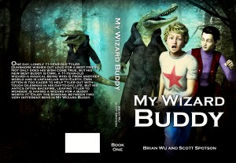

From the journal
New Series -- "My Wizard Buddy"
New book series coming out mid-July... "My Wizard Buddy" suitable for ages 7-12... Tyler finds a new wizard buddy, but is this what he wants? Explore his adventures in this series, released together all at once.
#fantasy #mg #ya #ebook #kindlebooks #middlegrade
#fantasy #mg #ya #ebook #kindlebooks #middlegrade


